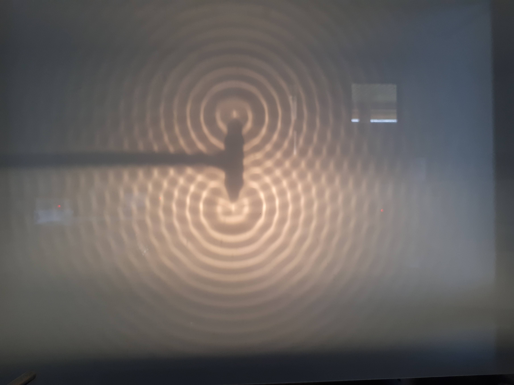

Terminale Générale
2020-2021
TP.12 Interférences
- Mettre en œuvre des dispositifs permettant d’étudier les phénomènes de diffraction et d’interférences.
- Respecter les règles de sécurité préconisées lors de l’utilisation de sources lumineuses.
1. Interférences lumineuses
Les fentes de Young (ou interférences de Young) dési-gnent une expérience qui
consiste à faire interférer deux faisceaux de lumière issus d'une même source.
Cette ex-périence fut réalisée pour la première fois par Thomas Young en 1801.
Cette expérience permet de mettre en évidence la nature ondulatoire de la lumière.
Un laser rouge est braqué vers un écran. Une bifente d’Young est maintenue par
un support de diapositives. Les fentes rectangulaires sont extrêmement fines et parallèles.
La distance b entre les fentes est connue.

Matériel :
- Laser
- Fente d'Young
- Écran
- Mètre ruban
- PC + Python
Protocole :
- Placer une bifente sur le trajet du faisceau laser. Le point lumineux doit toucher les deux fentes.
- Placer l’écran à une distance de la bifente de $D=3,00\ m$.
- Mesurer l’interfrange $i$ (prendre plusieurs franges) correspondant à l’espacement $b$ entre les fentes.
- Procéder de la même manière pour mesurer l’interfrange en prenant plusieurs valeurs de $D$.
- Pour une valeur $D=3,00\ m$, mesurer l’interfrange pour différentes valeurs de $b$.
a. Pour $D=3,00\ m$ , représenter la courbe donnant $i=f(\frac{1}{b})$.
b. Vérifier qu’il s’agit d’une droite et obtenir son équation.
2. Interférences dans une cuve à ondes
Une lampe est placée au-dessus de l’eau. Le fond de la cuve est une surface
dépolie formant un écran.
Les deux figures montrent un système de vagues à deux instants différents.
Quelques rayons issus de la lampe sont représentés.


Matériel :
- Cuve à ondes ou photo de la cuve à ondes
- PC + SalsaJ ou mesurim ou paint
Protocole :
- Utiliser la cuve à ondes pour obtenir des interférences (comme sur la photo ci-dessous) 
- Prendre une photo du verre dépolie avec une référence de longueur (en plaçant une règle par exemple)
- Importer la photo dans le logiciel de traitement d'image
- Déterminer l'échelle puis mesurer la longueur d'onde des ondes
Les deux sources sont notées $S_1$ et $S_2$. On considère un point $M$ tels que $S_1 M = d_1$ et $S_2 M=d_2$.